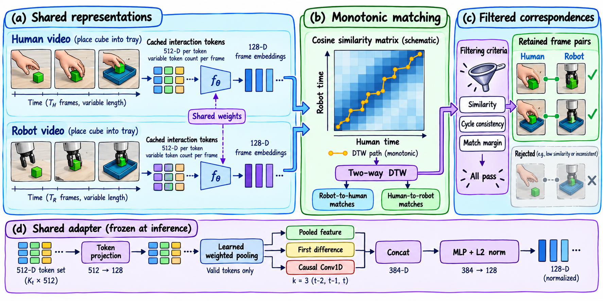

A · 色调与原字形修正版
色块按 A 原图取色；文字保留原图手绘字形与笔画粗细，转换为独立矢量轮廓。


主版本包含 59 组原图字形轮廓，可按字形路径编辑；可打字修改版另存，使用 Comic Sans MS。SVG 与 PDF 均无嵌入位图。布局沿用 A，背景纹理与手绘边缘仍可能存在细微差异。
色块按 A 原图取色；文字保留原图手绘字形与笔画粗细，转换为独立矢量轮廓。

主版本包含 59 组原图字形轮廓，可按字形路径编辑；可打字修改版另存，使用 Comic Sans MS。SVG 与 PDF 均无嵌入位图。布局沿用 A，背景纹理与手绘边缘仍可能存在细微差异。